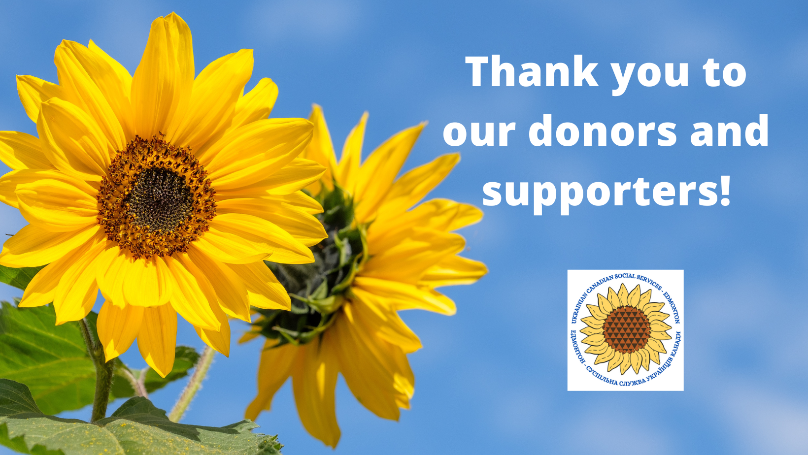

1. By cheque to:
11717 - 97th Street,
Edmonton, AB, T5G 1Y3, Canada
Payable to:
Ukrainian Canadian Social Services - Edmonton
MEMO: UCSS
Donations
Your support enables UCSS Edmonton to continue providing free community services locally and abroad
11717 - 97th Street,
Edmonton, AB, T5G 1Y3, Canada
Payable to:
Ukrainian Canadian Social Services - Edmonton
MEMO: UCSS
Make your donation to:
Please include your full name and address, and advise whether you wish to receive a tax receipt. Follow with an email to ucss@shaw.ca.
Every Fall Ukrainian Canadian Social Services - Edmonton turns to the community with a request to support its annual fundraising campaign. UCSS activity is guided by the needs of our community in Canada and throughout the world.
UCSS helps new immigrants, elderly, sick and isolated community members, and victims of natural disasters and catastrophes. Services are free of charge and open to community members.
Daily operations rely on the goodwill of those who understand the need for services that support vulnerable members of our community here in Canada and abroad.
For all donations $10 and more income tax receipts will be issued
